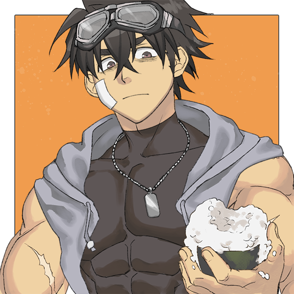

【信息调查】
「首先，请录入基本信息，这里是姓名。」
瀧田道朗 / たきた みちろう / Takita Michirou
「性别、年龄与出生地。」
男性，17岁，樱枫岛出身。
「接引员应该已经通知到了，你所在的机构（白塔/基金会/生命研究院）与身份（哨兵/向导/调停员/研究员）？研究员外请再补充能力源。」
白塔所属哨兵，能力源为「力量」
「简单介绍一下性格吧？我想，没人比你更了解自己。」
长得像老牌日系轻小说男主的地味少年，发色跟五颜六色的其他同僚们相比也是很普通的黑色。虽然个头很大但性格却是一等一的草食系。
待人接物低调温文，谨慎周到，却因脑内思索频繁经常陷入自己的思绪之中且自顾自地开始碎碎念。 另一方面也有着固执钻牛角尖的一面，一旦下定决心就会一条路走到黑不到黄河心不死。
虽然综合能力不错且有着战斗力较为强劲的能力源，却一直自诩「平凡之人」，战斗风格也如同手无缚鸡之力的平凡人那般胆小、慎重至上、时常保持着危机感。
于三年前事件中失去了身为考古学家的双亲，又在随后的一次副本显现中失去了短暂领养自己的舅舅兼监护人。在二度失去家人及栖身之处、万念俱灰之下自愿去申请成为了生命研究院《人造神格能力载体实验研究》的改造体。
实验失败后一度被判定为没有价值的失败品哨兵，却在阴差阳错下使得原本植入自己身体内的能力源从「愚者」变异为「力量」，最终侥幸获得了加入白塔的资格。
三番五次由喜转悲、如同过山车一样的过往经历造就了其纤细敏感甚至有些自卑的内在。也因在实验期间与其他改造体产生过深厚情谊，因此一直对因实验失败而无法获得能力甚至无法善终的失败品哨兵们感到愧歉；这份愧歉与家人丧失的悲痛让他从此便对「全员生还」有了异于常人的执着，对所属的集体有着强烈的共同体心态，必要的时候甚至会选择某种程度上的自我牺牲以保全集体内其他人的性命。所幸的是队友们都对此亦有所察觉 所以发病时大概率会被队友狠狠拷打
据本人所说，其在获得能力之前体格非常瘦弱，似乎是个「把ordinary一词贯彻得更加彻底的男孩」。
有着贪财又吝啬的一面，喜欢把钱存起来不舍得在自己身上花一分一豪。便当永远买最便宜的、衣物只要穿着舒服就会同一款式买五件、屋内布置也寒酸得离谱。喜欢的食物是茶泡饭、味噌炖鲭鱼、豆腐、甚至杯面这种廉价平民食物。在四下无人时会偷偷抱怨哨兵一职就是低薪劳工永远无法升迁
「接引员应该已经通知到了，你所在的机构（白塔/基金会/生命研究院）与身份（哨兵/向导/调停员/研究员）？研究员外请再补充能力源。」
身高中等（175cm），體格健硕，眼仁很小，顶着一头黑色乱发，有着较重的黑眼圈。 因为天生下垂眼的缘故看起来总是很困。外貌上总是给人带来一股挥之不去的杂鱼感，本人似乎对此有点在意却无力改变，毕竟花钱去改造自己这种事费时又费力，对于现阶段的他来讲实在太过奢侈了。
肩膀练得不错但斜方肌却没有很粗是他对于自己全身上下唯一满意的一点。
CV是地味角色专业户细谷佳正

「或许，除却这些信息外，你还有什么需要补充的吗？」
「最后，容我冒昧，但无论是谁都需要回答——『你害怕未知吗？』例如：死亡、孤独、绝望。」
「恐惧未知……是的，我害怕。但不完全是因为未知本身，而是因为那些未知可能带来的损失和痛苦。死亡、孤独、绝望——这些词汇对我来说并不陌生。我经历过亲人的丧失，感受过无助和孤独，也曾在绝望中挣扎。这些经历教会了我谨慎，让我始终保持警觉，尽可能地去预测和准备面对可能的未知。」
「但与此同时，我也学会了从这些恐惧中寻找力量。我的能力源就是一个例子。在不断的挑战和逆境中，我学会了如何利用我的【力量】去保护自己和我关心的人。对未知的恐惧提醒我不要轻易放弃，即使是在最黑暗的时刻。」
「所以，是的，我害怕未知。但同时我也在学习如何面对它，即便是以一种小心翼翼、步履蹒跚的方式前进。我害怕，但我不逃避，因为我希望能保护那些对我而言意义重大的人和事。这份害怕未知，也许正是推动我不断前进的力量之一。」